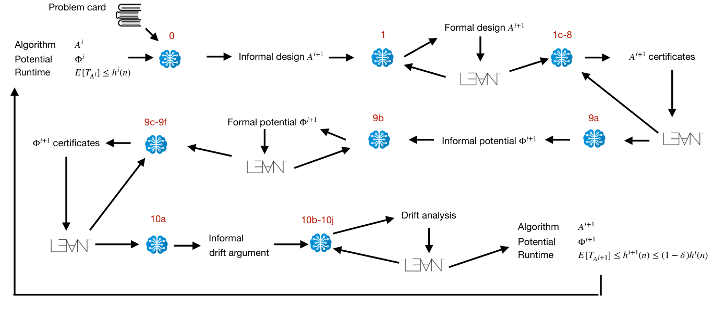

LLM agents design black-box optimisation algorithms and prove their expected-runtime drift bounds in Lean, with Lean guards filtering flawed designs.
Abstract
LLMs now prove hard theorems in Lean. Can they also design algorithms and prove their correctness and efficiency? LLM-guided design of optimisation heuristics (such as AlphaEvolve) is purely empirical. Automated theorem provers with LLMs prove given statements. So far, there has been little evidence that LLMs can do both: design an algorithm and guarantee its efficiency by a mathematical proof. We present a staged pipeline modelled after research methodology in design and analysis of evolutionary algorithms. The agent proposes black-box optimisation algorithms, and Lean guards filter out flawed designs. The agent then defines a potential function and proves drift bounds that guarantee an expected runtime improvement over the baseline algorithm. At no point in the pipeline are the algorithms compared empirically. The agent generates a black-box optimisation algorithm with expected runtime $O(n^2)$ on a CycleUncover problem, where the classical (1+1) EA needs runtime $e^{Ω(n)}$. The pipeline also designs and analyses a black-box optimisation algorithm for integer-valued submodular minimisation with expected runtime $O(n^{2+2c})$, and it matches the optimal order $O(n^2)$ on LeadingOnes. Across 8 problem classes, 12 of 15 runs with frontier models complete the pipeline with a machine-checked expected-runtime bound. An ablation study shows that removing the staging and asking the agent to zero-shot an algorithmic design with a runtime guarantee leads to a copy of the seeded baseline algorithm (random search) or to incomplete proofs. Our study suggests that machine-checked specifications in Lean can replace empirical evaluation in open-ended algorithm discovery. To the best of our knowledge, this is the first example of an automated pipeline that designs efficient black-box optimisation algorithms with machine-checked runtime bounds in Lean.
Problem
LLM-guided heuristic design such as AlphaEvolve validates algorithms only empirically, and LLM theorem provers only prove statements they are given. It is open whether an agent can both design an algorithm and prove its efficiency with a machine-checked proof.
Approach
A staged pipeline mirrors how researchers design and analyse evolutionary algorithms. The agent proposes black-box optimisation algorithms on bitstrings, and Lean proof guards filter out flawed designs. The agent then defines a potential function and proves drift conditions in Lean, which yield an expected-runtime bound via a simplified drift theorem. The implementation uses CLI and vLLM backends with a Kimina Lean server, and backtracking is governed by a Luby sequence.

Figure 2: A simplified overview of the staged pipeline. The pipeline is seeded with a problem card, an algorithm A^{i} , and a proof of its running time. The pipeline produces a new algorithm A^{i+1} with improved runtime bound relative to algorithm A^{i} . Table 3 provides detailed descriptions of the pipeline stages shown in red.
Results
Across 8 problem classes, 12 of 15 frontier-model runs completed the pipeline with machine-checked expected-runtime bounds. These include an O(n^2) algorithm for CycleUncover, where the (1+1) EA needs e^{Ω(n)}, O(n^2) on LeadingOnes, and O(n^{2+2c}) for integer-valued submodular minimisation. Zero-shot ablations and open-weight models failed to produce efficient algorithms.